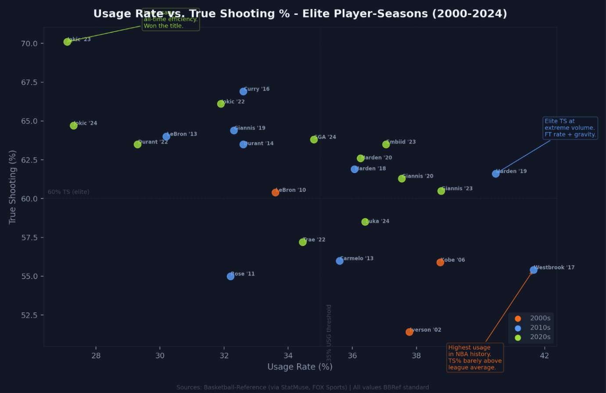
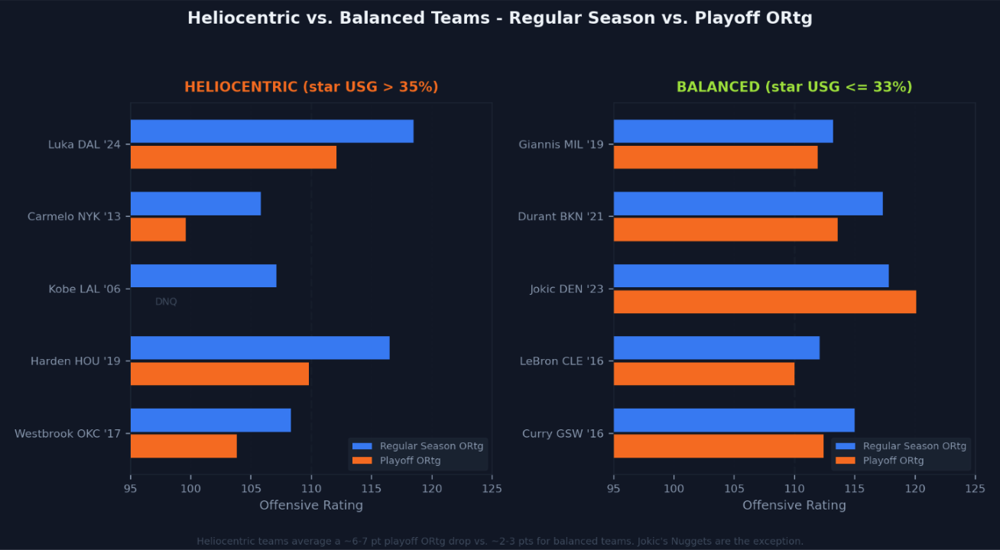
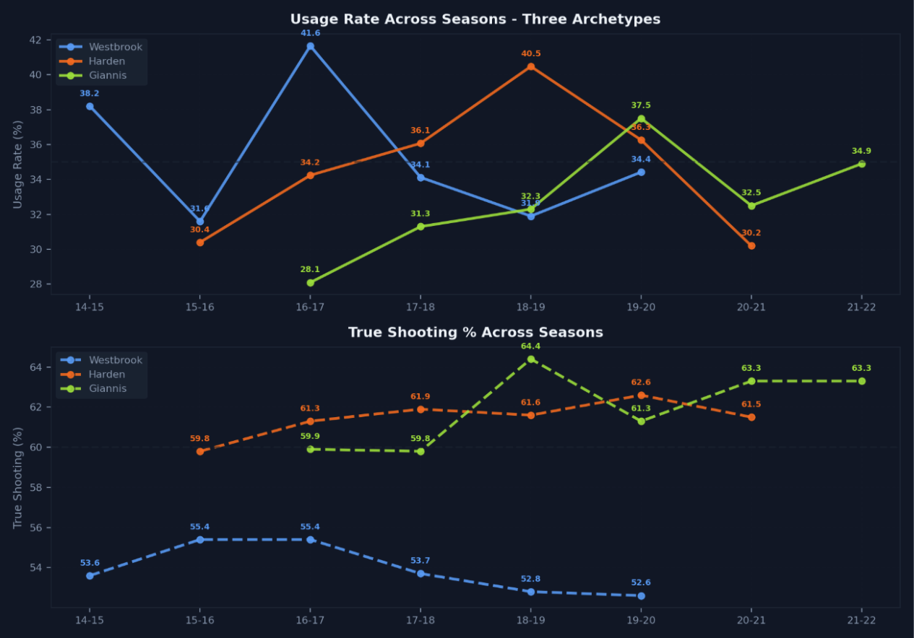

Does Feeding Stars Actually Work?
Usage rate, true shooting, and the uncomfortable math behind heliocentric offense
By Rishi Sandesh | June 11, 2026
Introduction
I keep coming back to Russell Westbrook's 2016-17 season because I think it broke something in the way we talk about basketball, and the more I look at the numbers the more I'm convinced that what it really exposed was a tension that every team in the league is still trying to resolve, which is the question of how much offense you can run through one player before the whole thing starts to collapse under its own weight.
41.65% usage rate. That's the highest single-season mark in NBA history and it means that every other possession that ended with Westbrook on the floor ended with Westbrook shooting, getting fouled, or turning it over, and he still averaged a triple-double and won the MVP while posting a 55.4% true shooting percentage, which sounds fine until you realize that league average that year hovered around 55.3%, so he was, by the broadest possible definition, exactly average-efficient while doing something nobody had ever done before.
OKC's offense rated out at 108.3 in the regular season, which was fine, not great, and then it fell to 103.8 in the playoffs where they got bounced in the first round, and I think that gap between regular season performance and playoff performance is the most important and most overlooked part of the heliocentric conversation, because it tells you something about what happens when the pressure ratchets up and the other team has a week to game-plan for exactly one guy.
The Question Nobody Agrees On
The way I see it, every front office in the league is dealing with some version of the same problem, which is figuring out how much offense to funnel through your best player, because if you give him the ball too little you're leaving points on the table and wasting what makes him special, but if you give him the ball too much the offense gets predictable and the role players go cold from standing around and your star is running on fumes by April when the games actually start to matter.
There's a word for the extreme end of this spectrum and it's heliocentric, the sun-centered offense where one player is the gravitational core and everyone else orbits around him, and it's how Houston ran Harden for the better part of five years and it's what Dallas does with Luka and it's more or less what Milwaukee tried with Giannis before they figured out he needed a different kind of system built around his specific skill set rather than just handing him the ball and getting out of the way.
I wanted to find the point where the returns start diminishing, where pumping more possessions through one player stops helping and starts hurting, and I think the data tells a story that's more complicated and more interesting than the simple "more usage equals worse efficiency" narrative that a lot of people default to.
What the Scatter Plot Actually Shows
I pulled advanced stats on 23 elite player-seasons from the last two decades, every notable season where a star carried a usage rate above 27%, and plotted usage rate against true shooting percentage using data from Basketball-Reference that I cross-checked against StatMuse and FOX Sports because I've learned the hard way that secondary sources get these numbers wrong more often than you'd expect.
The first thing that jumped out to me is that there is no clean relationship between usage and efficiency, and if you expected a smooth downward curve where more usage meant worse shooting you'd be looking at this scatter plot and feeling confused, because it's a mess, and I actually think that mess is the finding, because it tells you that the relationship between volume and efficiency depends almost entirely on the specific player and the specific offensive infrastructure around him rather than on some universal law of diminishing returns.

Look at the far right of the chart and you'll see Westbrook at 41.65% usage with 55.4% TS sitting almost directly above Harden at 40.47% usage with 61.6% TS, and what strikes me about that comparison is that those two players carried nearly identical offensive loads in the same era, both guards, both heliocentric, and yet six full points of true shooting separate them, which is an enormous gap that I think comes down to one thing: Harden's step-back three and his ability to get to the free throw line created a kind of offensive gravity that made his efficiency sustainable at extreme volume in a way that Westbrook's game never could, because Westbrook attacked the rim relentlessly but his jumper was never a credible enough threat to punish defenses for sagging off him.
Then look at the bottom left of the chart and you'll find what I think is the most important data point on the whole thing, which is Nikola Jokic in 2022-23 at 27.1% usage and 70.1% true shooting, one of the most efficient seasons any player has ever had, accomplished while using fewer possessions than half the stars on this chart, because Jokic ran Denver's offense without needing to dominate the shot attempts, he passed and he screened and he found the open man, and when he did shoot he made them at a rate that I honestly still find hard to wrap my head around for a player his size.
Jokic is the anti-heliocentric case study and I believe his 2023 title run is the strongest piece of evidence against building your offense around one player's volume scoring.
The 35% Line
If there's a threshold in this data, and I think there is, it sits somewhere around 35% usage rate, because below that number you see a wide range of outcomes with efficient and inefficient players scattered all over the place in a way that suggests usage alone isn't really determining anything, but above 35% the picture narrows and almost every player who crossed that line posted a true shooting percentage below 62%.
The exceptions are Harden, who did it twice, and Giannis in 2019-20 at 37.54% usage and 61.3% TS, and everyone else who pushed past 35% usage - Westbrook, Kobe at 38.74%, Iverson at 37.78%, Carmelo at 35.60% - was at or below 56% TS, which was below league average in most of those seasons, and I want to be careful here because I don't think high usage causes bad shooting in some mechanical way, Westbrook wasn't a poor shooter because he had the ball too much, he had the ball that much because OKC had no one else to give it to and his shooting limitations were already baked in, but the pattern is real even if the causation runs the other direction: very few players in NBA history have been able to maintain elite efficiency at extreme volume.
What Happens in the Playoffs
This is where I think the case against heliocentric offense gets really hard to argue with, because when I compared five heliocentric teams where the star's usage was above 35% against five balanced teams where the star's usage was at or below 33% and tracked how their offensive ratings shifted from the regular season to the playoffs, the difference was stark enough that I don't think you can explain it away as noise or small sample size.

The heliocentric teams averaged a 6-7 point drop in playoff offensive rating and I think that number is damning: Westbrook's OKC fell from 108.3 to 103.8, Harden's Houston from 116.5 to 109.8, Carmelo's Knicks from 105.8 to 99.6, and what I believe happened in every single one of those cases is that the defenses tightened and the scheme got scouted and the offense, which had basically one mode all season, didn't have a second gear to shift into when the opponent took away the primary action.
The balanced teams dropped 2-3 points on average, Curry's 2016 Warriors went from 115.0 to 112.4 and LeBron's 2016 Cavs from 112.1 to 110.0, and the reason I think those dips were smaller is that those teams had enough offensive variety and enough secondary creators that when the defense loaded up on the star, someone else could step in and punish it, which is a luxury that truly heliocentric teams almost by definition don't have.
And then there's Jokic, whose 2023 Nuggets actually posted a higher offensive rating in the playoffs than the regular season, which is something I still find remarkable because it means the offense got better under playoff pressure, and I think the reason is that when the defense loaded up on Jokic, Jamal Murray and Michael Porter Jr. could score, and when they spread out to cover the shooters Jokic picked them apart in the post, and there was simply no single lever you could pull to shut the whole thing down.
The one heliocentric team that stood out on the positive side was Luka's 2024 Mavericks, who dropped from 118.5 to 112.1 which is still a meaningful dip but they made the Finals, and I think what saved them is that Dallas had built enough secondary creation around Luka in the form of Kyrie Irving that the playoff adjustment, while expensive, wasn't fatal.
Three Careers, Three Lessons
I tracked usage and true shooting across six seasons for three players, Westbrook, Harden, and Giannis, because I think their career arcs illustrate three fundamentally different relationships between volume and efficiency, and watching the lines move over time tells you something that a single-season snapshot can't.

Westbrook's usage swung wildly from season to season, in 2015-16 playing alongside Kevin Durant he sat at 31.6% and then the next year after Durant left for Golden State it spiked to 41.65%, and what I find fascinating is that his true shooting barely moved, 55.4% in both seasons, which tells me that whether he used 31% or 41% of the possessions he was going to shoot about the same because his efficiency ceiling was structural, it was baked into his game, the volume changed but the player didn't.
Harden's line is the one I keep staring at because his usage jumped from 30.4% in 2015-16 all the way to 40.47% by 2018-19 and his true shooting held steady the entire time, bouncing between 59.8% and 62.6% across four seasons, and I honestly struggle to think of another player who has ever maintained that level of efficiency at that level of volume for that long, and I believe the explanation is that the free throw line was his cheat code, he attempted more free throws per game than most players attempted three-pointers, and that baseline of easy points gave him a floor of efficiency that almost nothing could push him below.
Giannis is the one who changed the most and I think his trajectory is the most instructive for how teams should think about this going forward, because his usage climbed from 28.1% as a raw athletic forward in 2016-17 to 37.5% as a full-fledged MVP candidate in 2019-20, and his true shooting peaked at 64.4% in his first MVP season when he was attacking the rim almost exclusively and finishing at a rate that didn't seem sustainable, and it wasn't exactly, his TS% settled to 61.3% the next year as teams built walls at the rim, but then it stabilized around 63% once Milwaukee adjusted the offensive structure around him, and I think what that shows is that the star doesn't have to decline when the usage goes up if the team is willing to evolve the system in response to how defenses adjust.
So does feeding stars actually work?
I think it depends on the star, and I know that sounds like a cop-out but the more time I spend with this data the more I'm convinced it's the only honest answer.
If your star is Jokic, a player who creates offense through passing as much as scoring and who doesn't need 35% usage to be the engine of everything, then you don't need a heliocentric system and I'd argue you actively shouldn't build one, because Denver's title run showed that distributed offensive responsibility with a uniquely skilled hub beats concentrated volume when the games matter most.
If your star is Harden in his prime, a player with the shooting gravity and free throw rate to maintain 61%+ true shooting at 40% usage, then heliocentric offense can absolutely work in the regular season and it did work for Houston for years, but I believe it will always have a playoff ceiling because the margins get too thin when one player is the only real source of creation and the defense knows exactly what's coming.
If your star is Westbrook, a force of nature who is going to impose his will regardless of what the math says, then heliocentric offense is what you're going to get whether you design it that way or not, and the math will remind you every April that willpower alone doesn't bend true shooting percentage.
I don't think the data says "never feed the star," I think it says the cost is real and it compounds in the playoffs and the stars who make it work are the ones who generate efficient offense for others, not just for themselves, and I think the 35% usage threshold isn't a wall so much as a tax, and only a handful of players in NBA history have been talented enough and skilled enough and surrounded by enough supporting infrastructure to pay it.